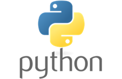
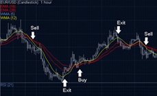

Здесь публикуются новости о ходе разработки проекта и достигнутых результатах.

Сегодня мы определились с инструментами для реализации нашего ПО. Основные достижения:
- Выбран язык программирования - Python
- Выбран framework - Backtrader для удобства написания стратегий
- Совместная работа будет вестить в репозитории github
Теперь мы можем приступать к разработке стратегий. Следующий этап - создание модуля бэктестинга.

Наша первая тестовая стратегия показала положительные результаты на исторических данных!
Стратегия основана на комбинации скользящих средних и RSI индикатора. В ходе тестирования на данных за 2022 год стратегия показала доходность 23% с максимальной просадкой 8%.
Ключевые показатели:
| Показатель |
Значение |
| Доходность |
23% |
| Максимальная просадка |
8% |
| Коэффициент Шарпа |
1.45 |
| Процент прибыльных сделок |
62% |
Следующий шаг - оптимизация параметров стратегии и тестирование на других временных периодах.
На текущем этапе мы разработали и протестировали 5 уникальных торговых стратегий с использованием исторических данных за несколько лет.
Ключевые достижения:
- Реализация различных подходов: трендовые, mean-reversion и арбитражные стратегии
- Полноценная визуализация результатов тестирования для каждой стратегии
- Интеграция с обширной базой рыночных данных
Тестирование показало стабильную работу всех алгоритмов. Особое внимание было уделено анализу equity-кривых и распределению сделок.
Следующим шагом будет внедрение системы управления рисками и оптимизация параметров стратегий.